id Software apresenta
DOOM
A HISTÓRIA DO JOGO QUE DEFINIU UM GÊNERO
Como uma pequena equipe criou o FPS mais icônico de todos os tempos
1993
APRESENTAÇÃO
Ranyer Lopes
Desenvolvedor Full Stack
- Ex-NPC, gamer nas horas vagas
- Entusiasta em IA
- Músico e desenhista quando dá
- Mais conhecido como aquele que tem vários nomes
O Cenário
Início dos anos 90 — o mundo dos games estava prestes a mudar
MS-DOS dominava os PCs. RAM era escassa. Gráficos 3D em tempo real eram considerados impossíveis. A id Software discordou.
id Software
A equipe pequena com ideias gigantes

A equipe da id Software
John Carmack
Motor gráfico revolucionário
John Romero
Level design — alma do gameplay
Adrian Carmack
Arte, sprites e o visual sombrio
- Fundada em 1991 em Shreveport, Louisiana
- Antes do DOOM: Commander Keen e Wolfenstein 3D
- Filosofia: tecnologia + criatividade acima de tudo
John Carmack
O programador que desafiou os limites do hardware

Prioridades
- Performance > Realismo
- Hardware acessível (486)
- Motor customizado do zero
- Ilusão de 3D, não 3D real
Conquistas técnicas
- Binary Space Partition (BSP)
- Raycasting otimizado
- Texture mapping em tempo real
John Romero
O arquiteto das experiências — game design como arte
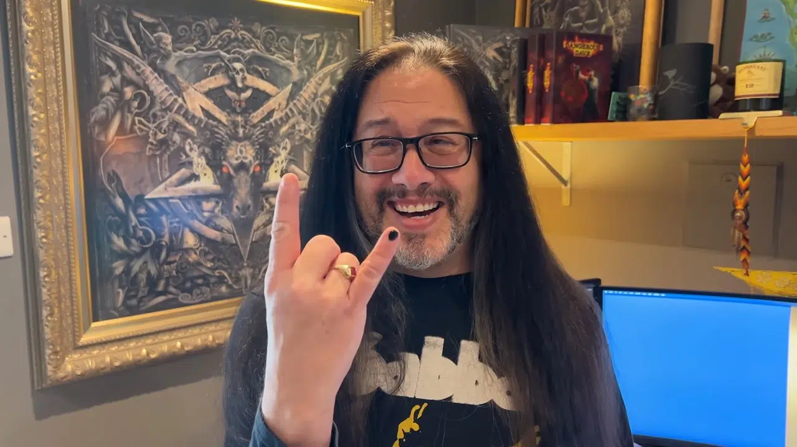
- Level design — criou as fases mais icônicas do DOOM do zero
- Definiu o ritmo frenético — gameplay loop que ainda é referência
- Co-criador do termo e modo DEATHMATCH
- Após id Software: fundou Ion Storm (Daikatana)
- 2019: lançou SIGIL — expansão gratuita oficial para o DOOM original
- Hoje: ativo na cena indie, palestra em eventos pelo mundo
A Doom Bible
O plano que nunca foi — e por que isso foi ótimo
📖 O que era?
Tom Hall, co-fundador da id, escreveu um documento de 48 páginas com história, personagens, narrativa e universo completo para o DOOM.
❌ O que aconteceu?
Carmack e Romero rejeitaram a proposta. Tom Hall foi demitido em agosto de 1993, meses antes do lançamento.
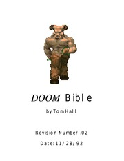
Computadores NeXT
A máquina que tornou o DOOM possível
- John Carmack usou o NeXTcube como máquina principal de desenvolvimento
- O sistema NeXTSTEP tinha ferramentas de dev muito à frente do Windows da época
- Steve Jobs fundou a NeXT em 1985 após ser demitido da Apple
- Custo da máquina: ~$9.000 — equivalente a ~$20.000 hoje
- Carmack afirmou que o NeXT economizou meses de desenvolvimento
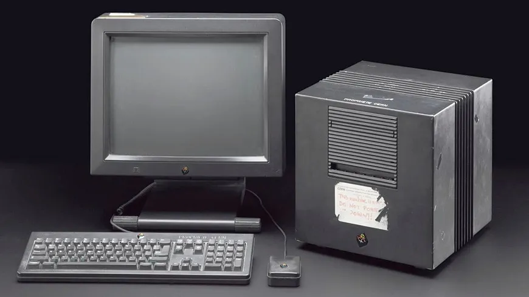
O NeXTSTEP foi a base do macOS moderno — a Apple comprou a NeXT em 1997 e trouxe Jobs de volta junto.
DOS4GW
Quebrando a barreira dos 640KB que prendia todos os outros
- O MS-DOS limitava o acesso a apenas 640KB de RAM — a infame "barreira dos 640K"
- DOS4GW era um extensor de modo protegido que dava acesso à memória extendida
- Permitia usar até 32MB de RAM — DOOM precisava de no mínimo 4MB
- Sem ele, DOOM simplesmente não caberia na memória para rodar
- Distribuído gratuitamente — bundled com o jogo
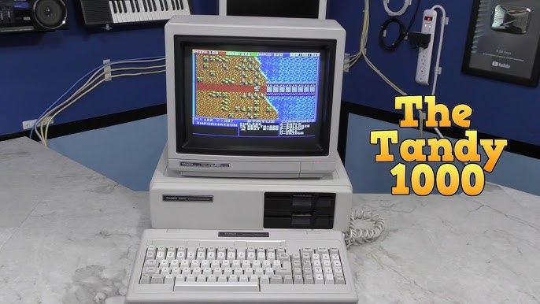
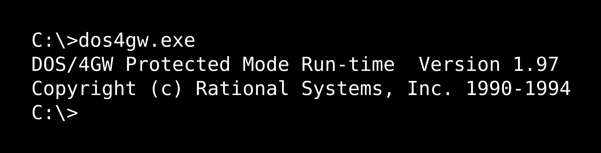
Bill Gates chegou a dizer que "640KB deveria ser suficiente para qualquer pessoa" — o DOOM provou o contrário.
Linguagem C + Assembly
Cada ciclo de clock importava
- Motor principal escrito em ANSI C — escolha consciente por portabilidade
- Trechos críticos reescritos em Assembly x86 puro por Carmack
- Fixed-point math no lugar de float — muito mais rápido no 486
- Tabelas de lookup pré-computadas para seno, cosseno e distância
- Resultado: ~35 fps num Intel 486 DX2-66 sem qualquer GPU dedicada
typedef int32_t fixed_t;
// Multiplicação sem float
#define FixedMul(a,b) \
((int64_t)a * b) >> 16
O código fonte do DOOM tem ~20.000 linhas. Foi aberto em 1997.
Ferramentas Internas
Nenhuma ferramenta comercial era boa o suficiente — então eles criaram as próprias
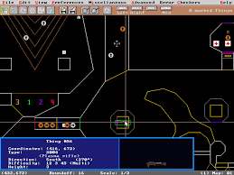
DMAPEDITEditor de Mapas DOS
Versão DOS do editor de níveis. Mostra os setores coloridos numerados — cada cor é uma região do mapa com propriedades próprias (altura, luz, textura).
 BSP COMPILER
BSP COMPILER
Compilador de Árvore BSP
Processa o mapa e gera a árvore BSP em wireframe — as linhas brancas são os planos de partição que definem a ordem de renderização. Rodava offline antes do jogo.
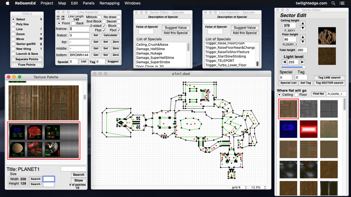
NODE BUILDEREditor Visual Completo
Editor com browser de texturas integrado, mapa 2D e painel de propriedades — o tipo de ferramenta que a equipe construiu do zero pois não existia nada similar no mercado.
O Problema do 3D Real
Por que 3D de verdade era impossível em 1993
- Hardware 3D dedicado custava dezenas de milhares de dólares (SGI workstations)
- O Intel 486 DX2-66MHz tinha ~50 MIPS — insuficiente para cenas 3D reais
- Sem FPU eficiente: operações de ponto flutuante eram extremamente lentas
- Quake (1996, 3D real) exigiria hardware 3x mais potente que o DOOM

Uma SGI Workstation — o tipo de hardware necessário para 3D real em 1993. Custava entre $10k e $100k.
A sacada de Carmack: o cérebro humano não precisa de 3D real para acreditar estar em 3D. Basta a perspectiva ser convincente.
BSP Tree
A estrutura de dados que resolveu a renderização
- Binary Space Partition — técnica criada em 1969, adaptada por Carmack para games
- Divide o mapa em dois semiespaços recursivamente com planos divisórios
- Resultado: uma árvore pré-calculada que define a ordem certa de renderização
- Sem BSP: checar cada parede contra cada outra — O(n²)
- Com BSP: percorrer a árvore — O(n log n)
- Compilada uma única vez offline — zero custo por frame em runtime
void renderBSP(node) {
if (isLeaf(node)) {
drawSector(node);
return;
}
renderBSP(front); // frente primeiro
renderBSP(back); // fundo depois
}
Setores e Texture Mapping
Como o DOOM construía seus mundos
- Setores são polígonos 2D com altura de teto, chão e nível de luz próprios
- Linedefs: segmentos de linha que definem paredes entre vértices do mapa
- Texture mapping: projeção perspectiva de texturas 64×64 nas paredes
- Lightmaps por setor: brilho uniforme por região (mais barato que por pixel)
- Sprites 2D para inimigos: sempre voltados para o jogador (billboarding)
O DOOM não é 3D de verdade — é um mapa estritamente 2D com a ilusão de altura. Dois setores nunca podem se sobrepor verticalmente. Por isso não existe "andar de cima".
Essa limitação foi completamente resolvida apenas no Quake (1996), com engine 3D real de Carmack.
Raycasting — Como Funciona
Um raio por coluna de pixel — simples, previsível, rápido
- Para cada coluna de pixels da tela, um raio é lançado a partir do jogador
- O raio viaja pelo mapa 2D até bater numa parede
- A distância até a parede determina a altura da fatia desenhada
- Parede perto → fatia alta | Parede longe → fatia baixa
- Resultado: ilusão de perspectiva 3D com custo linear O(n) — um raio por coluna
O problema: como renderizar perspectiva sem GPU?
Resposta: matemática simples — distância é inversamente proporcional à altura.
A tela do DOOM tinha 320×200 pixels. Ou seja: apenas 320 raios por frame. Um 486 conseguia calcular isso a 35fps.
DOOM vs Wolfenstein 3D
Carmack levou o raycasting a um nível completamente novo
.jpg)
Wolfenstein 3D (1992)
- Raycasting puro — paredes sempre a 90°
- Teto e chão com cor sólida
- Sem variação de altura — um único andar
- Sem transparências ou janelas
.avif)
DOOM (1993)
- Paredes em qualquer ângulo
- Alturas variáveis — degraus, plataformas, fossos
- Texturas em pisos, tetos e paredes
- Iluminação dinâmica por setor
- Portas animadas, pontes, elevadores
Demo ao Vivo
Engine de raycasting rodando no navegador — experimente você mesmo
Clique na demo → W A S D para mover | Mouse para girar
Os Inimigos
A técnica inusitada que deu vida aos demônios
- Sprites 2D voltados ao jogador — billboarding
- Cada frame = uma foto digitalizada do modelo físico
- Visual único e visceral que marcou toda uma geração
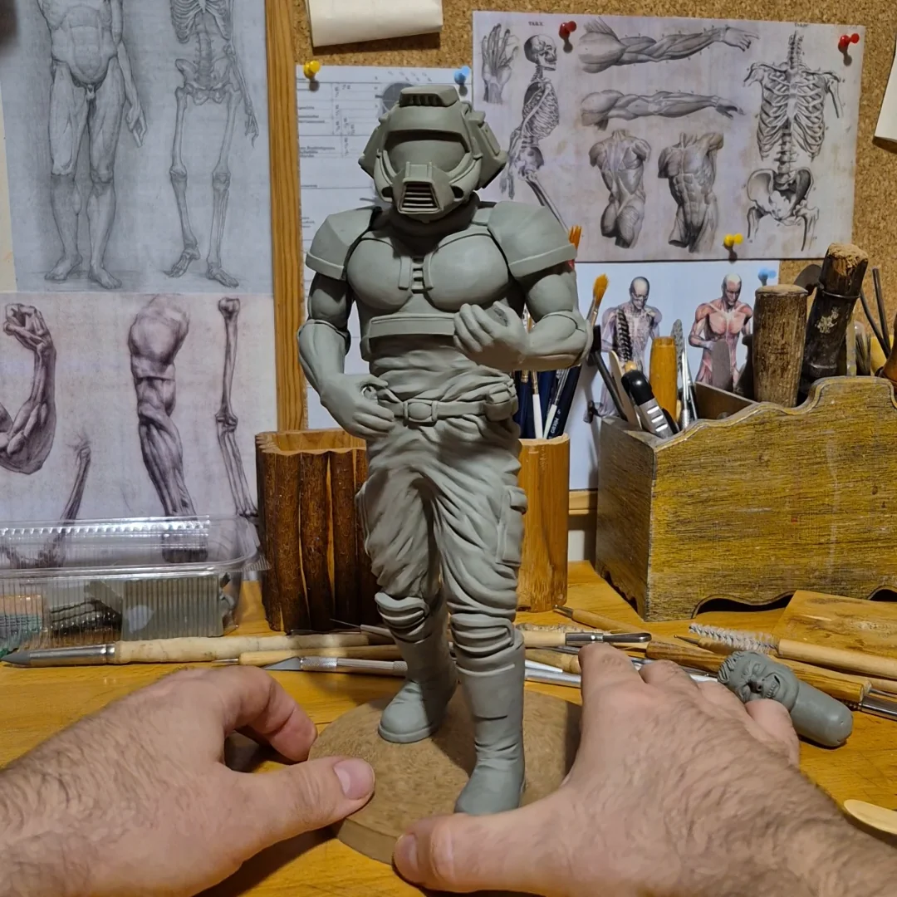
Modelos físicos originais usados como sprites (Escultura em argila)
Galeria: Arte Analógica
Registros raros das esculturas originais antes da digitalização
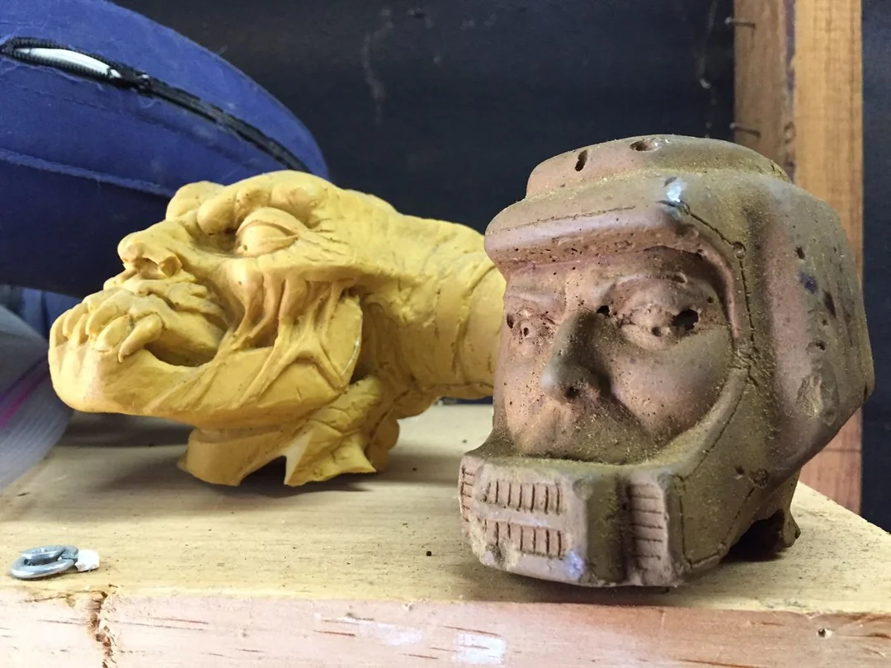
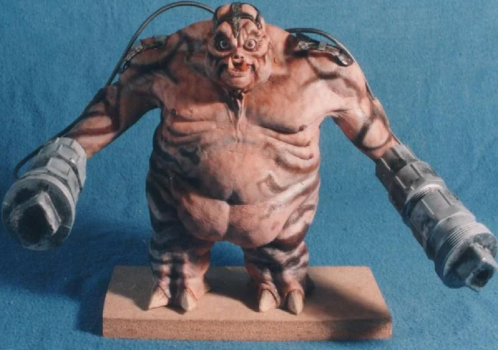
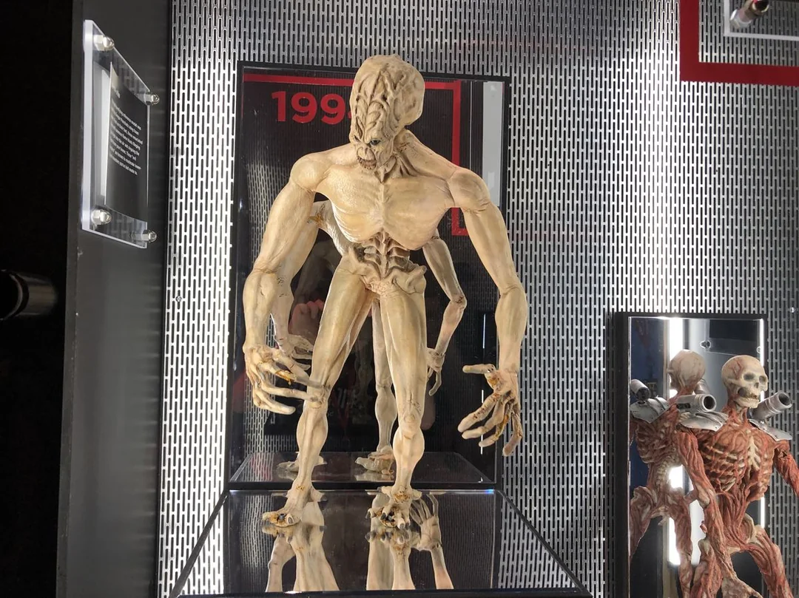
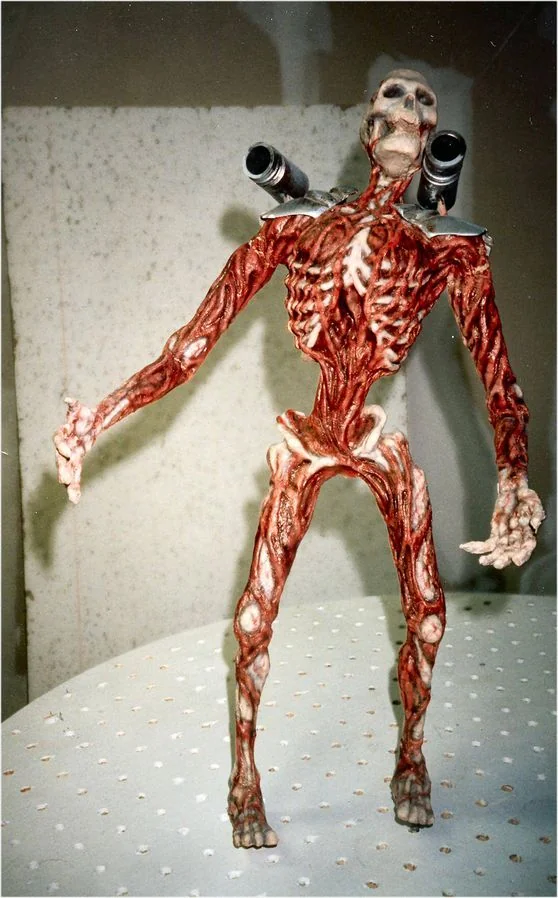
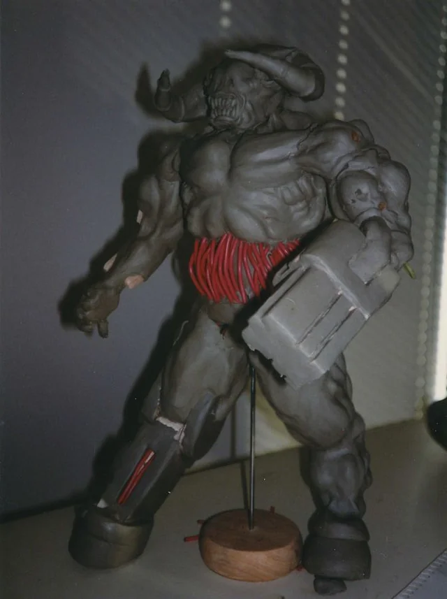
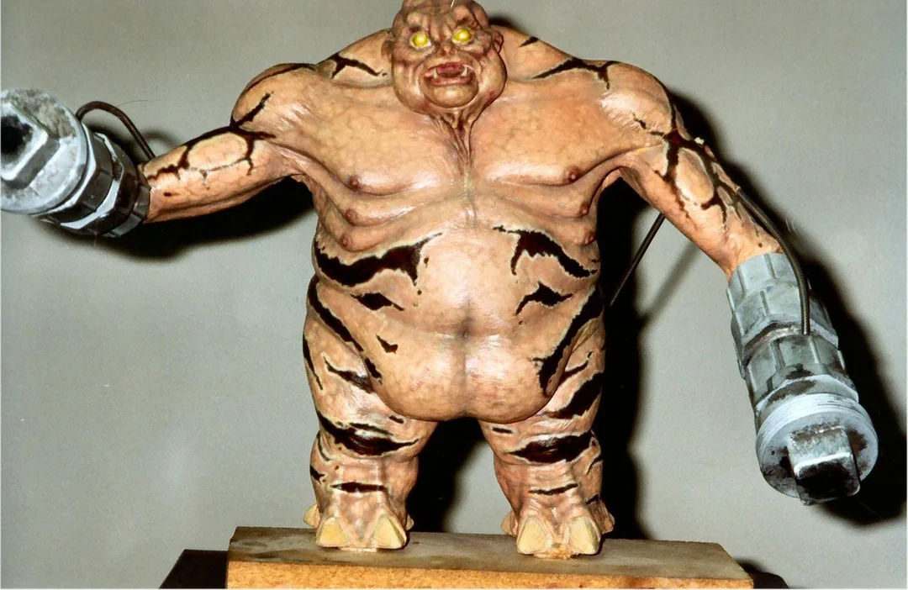
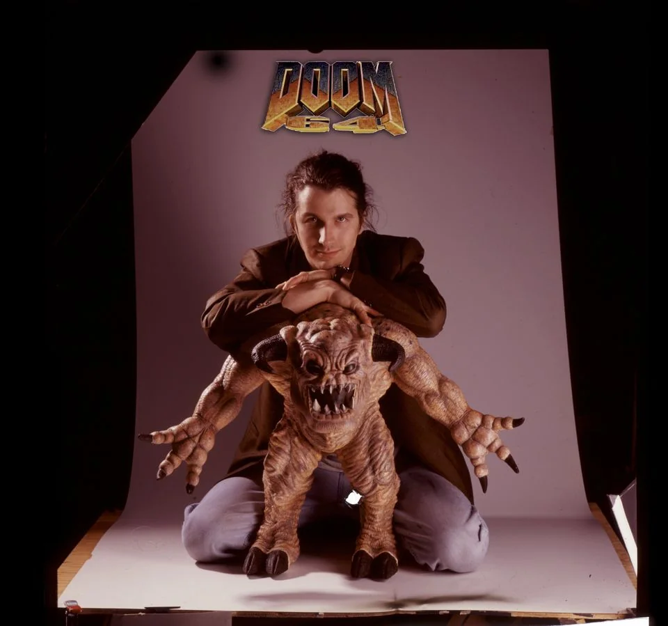
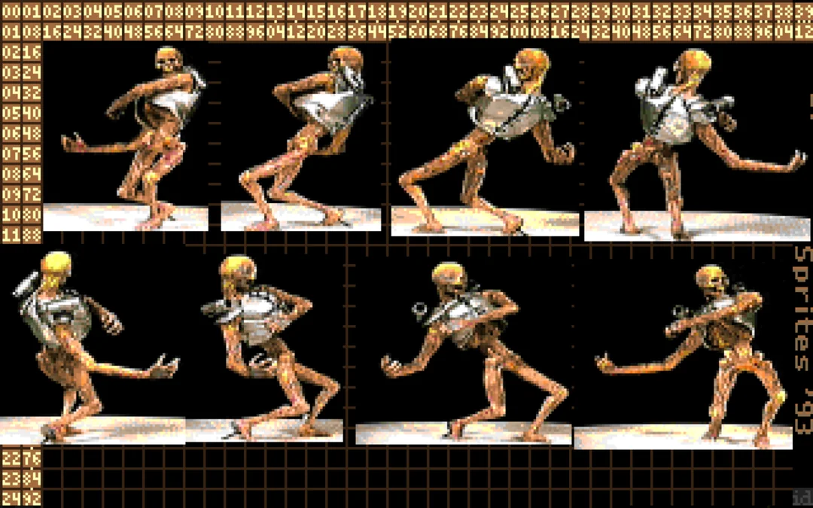
O Formato WAD
"Where's All the Data?" — um container revolucionário
- Arquivo único com todos os dados do jogo — mapas, texturas, sons, sprites, músicas
- IWAD = Internal WAD (jogo completo) | PWAD = Patch WAD (mods)
- Separação total entre engine e conteúdo — você modifica o WAD sem tocar no executável
- O
doom.wadoriginal tinha ~11.8MB e 1.366 lumps - Cada lump tem: offset no arquivo, tamanho e nome de 8 bytes
struct WadHeader {
char id[4]; // "IWAD" ou "PWAD"
int32 numlumps; // total de lumps
int32 infotableofs; // offset do índice
};
O Legado do WAD
A semente do modding moderno
- A id Software encorajou abertamente a criação de WADs — era publicidade gratuita
- Dezenas de milhares de WADs criados pela comunidade nos anos seguintes
- Nascimento do conceito de modding como cultura nos games
- Influência direta em Quake, Half-Life, Counter-Strike
- O Counter-Strike começou como um mod — herdeiro direto dessa filosofia
O conceito WAD vive hoje no Steam Workshop, nos mods de Minecraft, nos pacotes do Bethesda Creation Kit — em qualquer jogo que separa engine de conteúdo.
O Modelo Shareware
A distribuição que revolucionou o software antes da internet

- Episódio 1 gratuito — jogue, se gostar, compre os outros
- Download via FTP anônimo — antes das lojas digitais existirem
- Servidores da Univ. de Wisconsin colapsaram no lançamento
- Nascimento do modelo "free-to-play + premium"
- Antecessor direto de Steam, Epic Games Store e todos os launchers hoje
A Infraestrutura — Porta 666
O jogo que usou a rede corporativa contra as próprias empresas
- DOOM usava o protocolo IPX (Novell NetWare) para LAN — o padrão corporativo da época
- TCP/IP foi adicionado em versão posterior, com suporte a Internet
- A porta 666 foi oficialmente registrada na IANA — a autoridade global de nomes de internet
- Um servidor
SERSETUP.EXEcoordenava as sessões multiplayer - Latência de ~1ms em LAN tornava a experiência perfeitamente jogável
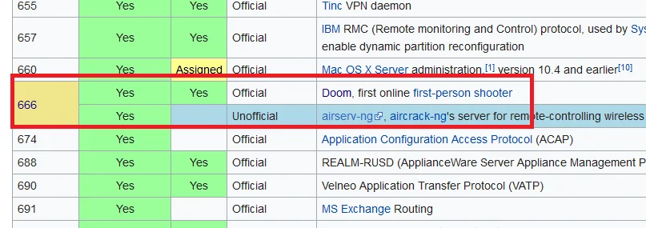
Registro oficial da porta 666 na lista de portas TCP/IP da IANA — "Doom, first online first-person shooter"
DEATHMATCH
John Romero inventou uma palavra que dura até hoje
- O termo "deathmatch" foi cunhado por John Romero especificamente para o DOOM
- Conceito tão novo que o manual do jogo precisava explicar o que era
- Até 4 jogadores se eliminando em mapas fechados
- O termo "frag" (de fragmentation grenade) virou sinônimo de matar em games
- Criou a cultura das LAN parties que definiu toda a geração dos anos 90
DOOM deathmatch é o ancestral direto de Quake, Counter-Strike, Halo, Call of Duty e todos os shooters multiplayer modernos.
Banido nas Empresas
O jogo que travou a produtividade do mundo corporativo
- Redes Novell NetWare das empresas eram perfeitas para o DOOM — sem querer
- Estudos internos apontaram queda de produtividade em empresas que permitiram o jogo
- Intel, empresas de tecnologia e universidades criaram políticas explícitas contra games em rede
- Surgiram os primeiros debates sobre games no ambiente de trabalho
- O fenômeno foi tão grande que virou notícia em jornais mainstream no mundo todo
"DOOM Sickness": relatos de funcionários com náuseas durante o expediente — causadas por longas sessões de jogo escondido no trabalho.
Modo Cooperativo
Até 4 jogadores completando o inferno juntos
- Até 4 jogadores completando a campanha juntos — algo inédito em PCs em 1993
- Recursos compartilhados: munição e itens somem quando um jogador pega
- Todos veem o mesmo mapa em tempo real, com os avatares dos outros visíveis
- Morreu? Você respawna no início do nível — pioneiro do conceito de respawn
- Base direta para Quake, Half-Life, Halo e toda co-op moderna
O co-op do DOOM foi tão revolucionário que mudou a forma como as empresas pensavam design de jogos. Antes, multiplayer era basicamente xadrez por correspondência.
O Código que Nunca Morreu
1997: Carmack abre o código — a comunidade faz o resto
Ports criados pela comunidade
- Chocolate Doom — fidelidade total ao original
- Crispy Doom — melhorias mínimas, mantendo a alma
- PrBoom+ — compatibilidade e demo recording
- GZDoom — OpenGL, scripting ZScript, mods modernos
- EDGE, Odamex, Zandronum — multiplayer online
O que programadores construíram
Novos renderers em OpenGL e Vulkan, linguagem de scripting (ZScript/ACS), suporte a modelos 3D, física customizada — tudo em cima de um código de 1993.
GZDoom ainda recebe atualizações regulares em 2026.
Boa arquitetura não envelhece — ela evolui.
id Tech — A Engine Licenciável
O modelo que inspirou Unity, Unreal e a indústria moderna
Jogos que usaram a engine
- Heretic (1994) — Raven Software
- Hexen (1995) — Raven Software
- Strife (1996) — Rogue Entertainment
- Quake engine → Half-Life → Counter-Strike
Antes da id Software, cada estúdio construía seu motor do zero. Carmack criou o mercado de engines.

Herança direta
id Tech 1 → 2 → 3 → influenciou toda uma geração de FPS e originou o modelo de licenciamento de engine como produto.
DOOM e a GPU
Como um jogo acelerou o desenvolvimento do hardware moderno
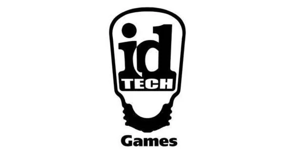
- Em 1993, PCs não tinham GPU dedicada — tudo era processado pela CPU
- DOOM gerou demanda massiva por processamento gráfico intenso
- Fabricantes S3, ATI e a nascente NVIDIA aceleraram o desenvolvimento
- DOOM 3 (2004) foi um dos primeiros a exigir aceleração 3D real
- Sem DOOM, o mercado de GPUs poderia ter demorado anos a mais para se consolidar
Linha do Tempo
- 1991Fundação da id Software. Wolfenstein 3D.
- Fev 1992Desenvolvimento do DOOM iniciado. Carmack começa o motor.
- Dez 1993Shareware lançado gratuitamente. Download explode nos servidores.
- 1994DOOM II — mais inimigos, armas e o Super Shotgun.
- 1997Código-fonte liberado sob GPL. Comunidade explode.
- 2004DOOM 3 — reboot de terror com gráficos 3D reais.
- 2016DOOM reboot — novo sucesso de crítica e público.
- HojeComunidade ativa. Patrimônio cultural dos games.
Curiosidades
Fatos que você provavelmente não sabia sobre o DOOM
📦 Tamanho minúsculo
O DOOM shareware pesava apenas ~2,39 MB — e mudou a indústria para sempre.
💿 Distribuição viral
Mais de 10 milhões de cópias instaladas no primeiro ano via download FTP gratuito.
🔓 Open Source
Em 1997, John Carmack liberou o código-fonte sob GPL — dando vida a centenas de ports.
📡 Porta 666
A porta usada no multiplayer foi registrada oficialmente na IANA — única para um jogo.
🎮 Deathmatch
DOOM popularizou o termo deathmatch e o conceito de LAN party no mundo todo.
🖥️ Benchmark cultural
"Can it run DOOM?" virou o teste definitivo de capacidade de qualquer hardware.
Can It Run DOOM?
O meme que virou patrimônio da cultura geek
▶ DOOM em Caixa Eletrônico
Aussie50 — ATM rodando DOOM via DosBox
▶ DOOM em Impressora Canon
Context InfoSec — firmware modificado Canon Pixma
O Legado
O que uma equipe pequena e criativa pode fazer
Gênero FPS
Definiu as mecânicas fundamentais do gênero que domina os games até hoje.
Cultura do Modding
O formato WAD foi o embrião da cultura de mods que molda a indústria.
Open Source
Código liberado em 1997. Ports em geladeira, ATM, calculadora — tudo roda DOOM.
"Can it run DOOM?" — patrimônio cultural da computação
Lição final
RIP & TEAR
Feito com Reveal.js
Obrigado pela atenção
ISSO É TUDO
PESSOAL! 👾
Me encontre em
- Portfólio, redes e projetos
- Links organizados no QR ao lado
- linktree-ranyer.vercel.app
ESCANEIE
Ranyer Lopes
- Desenvolvedor Full Stack
- Entusiasta em IA
- Gamer, músico & desenhista
"If in doubt, make it run faster" — John Carmack